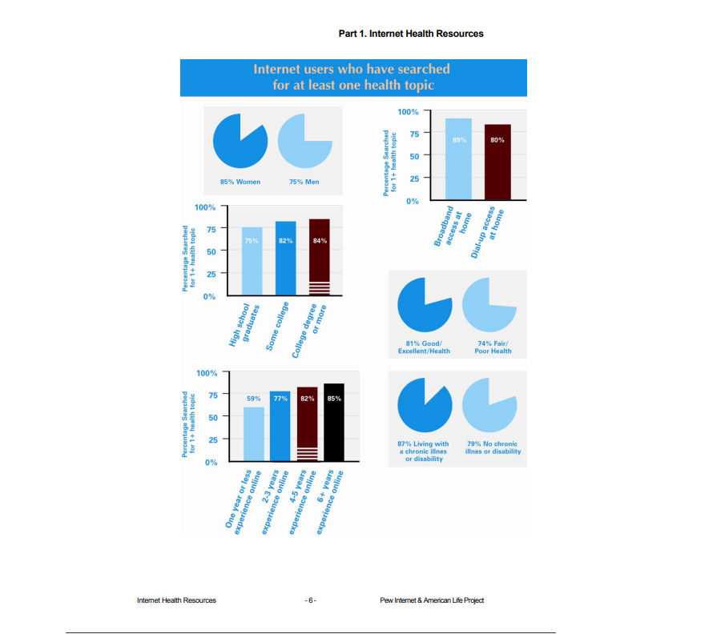

Introduction
(Click the Title to jump to the section)
By: Seungbin Chung
(Click the Title to jump to the section)
Summary Example. (Click the Title to jump to the section)
Summary Example. (Click the Title to jump to the section)
Summary Example. (Click the Title to jump to the section)

In our everyday society, we have been using the internet more than ever. Ever since the pandemic, we have been forced to stay home, and for most students, we have been increasingly using the internet for school, on top of other activities we may be doing such as browsing the internet. With about half the world population having access to the internet, and the U.S. having close to 90%, some of us do not consider what effects the internet might have. Therefore, I would like to present my argument; the internet is beneficial for our everyday health.
The first thing I’d like to address is social connection. How social media plays in our everyday society is through media presence. With how we interact with others, social media has made it easier to express ourselves to others through media such as video, photos, or even just through text. How this affects us can have both a positive and negative change. Some might even say that using social media constricts social interactions. Which is why the internet should not be the main form of social interaction but an alternative. This has especially stood out during the pandemic which has proven a great alternative for interaction. Being able to interact with friends and family in this situation is definitely a great factor that can play into improving mental health, and maintaining connections with others or making new ones.

The benefits for health monitoring are very broad. Some of the positive effects of health monitoring with the internet include access to a wide database, convenient access to online help if needed, and apps to help you track everyday statistics to monitor lifestyle. The ever-increasing database and internet browsers, have led to more people searching for health topics. From a research instituted by Pew Research, you can find demographics and statistics of people searching up a health topic below
The database isn’t the only thing useful, you also have quick access to online help if you need to have a quick consultation, and you have apps that can track your everyday lifestyle. With these features, you could adjust according to what your goal might be in terms of health.

Finally, there are some advantages of using the internet for health purposes. It grants user anonymity, and repeating from health monitoring, it has an easy-access and widely accessible database. The concept of empowerment can also apply as it gives the user more control with access to information, etc. While there may be some disadvantages like needing to go physically when needed and the digital divide which regards who has access to the internet, this serves as an alternative.
Fox, Susannah, and Deborah Fallows. “Internet Health Resources.” SSRN, 16 July 2003, papers.ssrn.com/sol3/papers.cfm?abstract_id=2054071
“5 Ways the Internet Can Help You Boost Your Health.” Harvard Health, June 2016, www.health.harvard.edu/staying-healthy/5-ways-the-internet-can-help-you-boost-your-health.
Korp, Peter. “Health on the Internet: Implications for Health Promotion.” OUP Academic, Oxford University Press, Feb. 2006, academic.oup.com/her/article/21/1/78/624247?login=true.
“The Internet in Everyday Life I: Sociability.” Social Theory after the Internet: Media, Technology, and Globalization, by Ralph Schroeder, UCL Press, London, 2018, pp. 82–100. JSTOR, www.jstor.org/stable/j.ctt20krxdr.7. Accessed 23 Mar. 2021.
Social Effects On Health